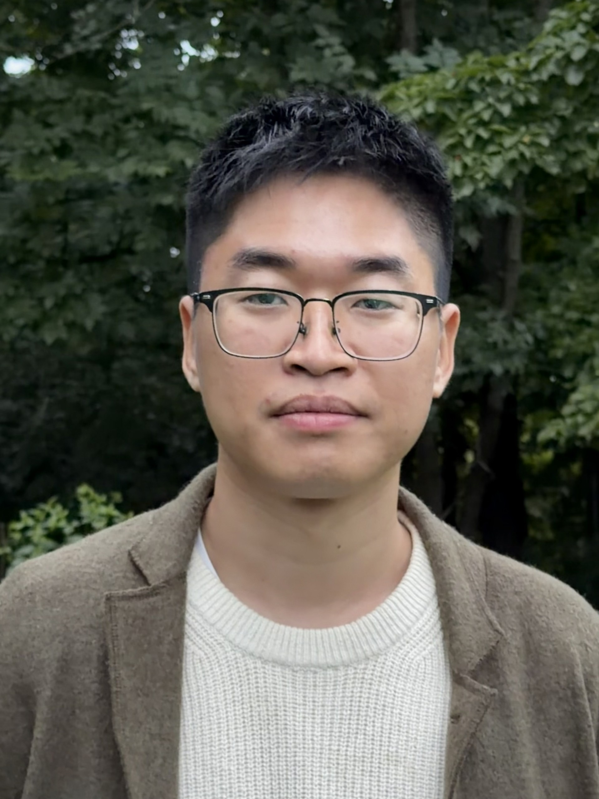

Princeton University · Department of Mathematics
Hao Peng
Arithmetic geometry
& number theory.
I am an Instructor in the Department of Mathematics at Princeton University, where I started in September 2026.
I graduated from MIT in June 2026, where I had been a graduate student since Fall 2021, advised by Wei Zhang. Before that, I studied mathematics at Peking University with Ruochuan Liu.
I work in arithmetic geometry and number theory. My interests include integral and rational points on polynomial systems (Diophantine geometry), cohomology and motives over number fields, and the arithmetic applications of the relative Langlands program (e.g., periods, theta correspondences, and duality phenomena).

Preprints & papers
- Fargues-Scholze parameters and torsion vanishing for special orthogonal and unitary groups. arXiv:2503.04623. In this article, I prove the compatibility between the classical and Fargues--Scholze local Langlands correspondence (LLC) for pure inner forms of orthogonal or unitary groups, and use it to prove torsion vanishing result for certain compact orthogonal or unitary Shimura varieties. As a byproduct, the LLC for pure inner forms of unramified SO(2n) is proved.
- The endoscopic character identity for even special orthogonal groups. Journal für die reine und angewandte Mathematik. In this article, I prove the conjectural endoscopic character identity (ECR) for certain A-packets (including all tempered ones) of non-quasi-split even special orthogonal groups via a globalization method.
- On the Beilinson-Bloch-Kato conjecture for polarized motives. arXiv:2509.18615. In this article, I prove the generalization of the BSD conjecture (that is, the BBK conjecture) for certain conjugate self-dual motives (including those coming from odd symmetric power of non-CM elliptic curves over totally real fields not Q) at analytic rank zero.
- An R=T theorem for certain orthogonal Shimura varieties, joint with Dmitri Whitmore. arXiv:2602.04778. In this article, we use the Taylor-Wiles patching argument to prove an almost minimal R=T theorem for certain orthogonal Shimura varieties of type B or D, where certain minimal ramifications are allowed.
- Higher Kolyvagin theorems in the arithmetic Gross-Prasad setting, in progress. In this article, I extend the BBK result above to certain self-dual or Rankin-Selberg motives over Q.
Expository notes
- Skyscraper project. Skyscraper is my long-term project to organize the core machinery of modern mathematics (with an algebraic bias) into a single, coherent, and structured knowledge base. I record results as canonical statements in consistent notation, write proofs in a detailed stepwise style when helpful, and make the prerequisite structure increasingly explicit and extractable. The manuscript is actively maintained (~40 pages/month), with gaps and uncertainties explicitly marked for later revision. It currently spans ~3,400 pages; the latest structured export contains ~16,000 statements and ~9,100 proofs. Structured release.
- Hecke L-function for imaginary quadratic fields . A note prepared for reading course on analytic number theory with high school students.
- Ternary Goldbach's problem, and average of multiplicative functions.. A note prepared for reading course on analytic number theory with high school students.
Invited talks
- Sep, 2026, Automorphic forms and representation theory seminar, Purdue University. ''The endoscopic character identity for even special orthogonal groups.''
- June, 2025, Algebra and Number Theory Forum, Sichuan University. ''The Beilinson-Bloch-Kato conjecture and theta correspondence.''
- Jan, 2026, Junior Number Theory Day, Johns Hopkins University. ''An R=T theorem for certain orthogonal Shimura varieties.''
- Nov, 2025, RTG Seminar, UC Berkeley. ''On the Beilinson-Bloch-Kato conjecture for polarized motives.''
- Nov, 2025, Online Seminar run by D. Loeffler and S. Zerbes, UniDistance & ETH Zurich. ''On the Beilinson-Bloch-Kato conjecture for polarized motives.''
- Oct, 2025, Number Theory/Representation Theory Seminar, University of Wisconsin-Madison. ''On the Beilinson-Bloch-Kato conjecture for polarized motives.''
- Sep 2025, Number Theory/Representation Theory Seminar, Boston College. ''On the Beilinson-Bloch-Kato conjecture for polarized motives.''
- Aug 2025, Minicourse, BICMR, Peking University. ''Arthur, Fargues-Scholze and Beilinson-Bloch-Kato.''
- Jul 2025, HO#T DAY WORKSHOP (Highly Original # Theory), IASM, Zhejiang University. ''On the Beilinson-Bloch-Kato conjecture for polarized motives.''
- Apr 2025, Number Theory Seminar, Boston University. ''Fargues-Scholze vs. classical parameters, and applications.''
- Mar 2025, Number Theory Seminar, Stanford University. ''Fargues-Scholze vs. classical parameters, and applications.''
- Mar 2025, Lie Groups seminar, MIT. ''Fargues-Scholze vs. classical parameters, and applications.''
Expository talks
- Apr 2026, ''On the generic part of the cohomology of Shimura varieties of Abelian type, 1.''
- Mar 2026, ''Automorphic category as a categorical trace.''
- May 2025, ''Independence of ℓ for Frobenius conjugacy classes attached to abelian varieties.''
- Feb 2025, ''On the generic part of the cohomology of non-compact unitary Shimura varieties.''
- May 2024, ''Asymptotic density of rational points.''
- Apr 2024, ''Intersection matrix of basic locus via geometric Satake: examples.''
- Feb 2024, ''λ-adic Galois representations associated to Hilbert modular forms.''
- Jan 2024, ''ℓ-adic Galois representations associated to automorphic forms.''
- Dec 2023, ''Proof of the local Langlands conjecture for GL(n) over p-adic number fields.''
- Oct 2023, ''Tate conjecture for rational K3 surfaces.''
- Mar 2023, ''Complex Abelian varieties.''
- Jan 2023, ''Kato's Euler system.''
- Dec 2022, ''Beilinson's conjecture on special values of L-functions.''
- Nov 2022, ''Conjectures about Galois representations.''
- Oct 2022, ''De Rham representations.''
- Oct 2022, ''Hodge-Tate representations.''
- Sep 2022, ''Brauer groups.''
- Jan 2022, ''Hecke converse theorems.''
- Oct 2021, ''Adic spaces.''
- Oct 2021, ''Period spaces for p-divisible groups.''
Notes for these talks are included in the Skyscraper project.
Seminars
- Joint PU/IAS Number Theory — Co-organizer, Fall 2026
- Learning seminar on proof of categorical local Langlands correspondence
- MIT STAGE seminar
- Learning seminar on recent high-profile papers
- Learning seminar on statement of arithmetic inner product formula
- Learning seminar on proof of local Langlands for GL(n)
Teaching
- In Fall 2025, I was TA for 18.112: Complex analysis in one variable.
- In Spring 2025, I was TA for 18.715: Introduction to Representation Theory.
- In Fall 2024, I mentored three high school students on reading "Analytic number theory" by H. Iwaniec and E. Kowalski.
- In Fall 2024, I was TA for 18.003: Differential Equations.
- In Spring 2024, I mentored three high school students on reading "Analytic number theory" by H. Iwaniec and E. Kowalski.
- In Spring 2024, I was TA for 18.786: Number Theory 2.
- In Spring 2024, I was TA for 18.703: Modern Algebra.
- In January 2024, I mentored one undergraduate student on reading "Local Langlands correspondence for GL(n) over p-adic fields" by P. Scholze.
- In Fall 2023, I was TA for 18.112: Complex analysis in one variable.
- In Spring 2023, I was TA for 18.102: Introduction to functional analysis.
- In Fall 2022, I was TA for 18.112: Complex analysis in one variable.
- In August 2022, I mentored one undergraduate student on writing the paper "Gelfand-Kirillov dimensions of representations of p-adic groups" during SPUR program, which won a Roger's prize for best final papers in 2022 program in undergraduate research.
- In August 2022, I mentored another undergraduate student on writing the paper "Density of Tamagawa numbers of elliptic curves over global fields" during SPUR program.
- In January 2022, I mentored two undergraduate students on reading "A first course on modular forms" by F. Diamond and J. Shurman.
Useful links
Some useful resources, including information that can be hard to find elsewhere. This list is very incomplete.
- Niven T. Achenjang's homepage
- Arizona Winter School
- Banana space (in Chinese)
- Bhargav Bhatt's homepage
- Brian Conrad's homepage
- Sanath Devalapurkar's homepage
- Vladimir Drinfeld's homepage
- Pavel Etingof's homepage
- Laurent Fargues' homepage
- Tony Feng's homepage
- Paul Garrett's homepage
- Haoyang Guo's homepage
- Michael Harris' course notes
- Michael Harris' substack account
- Pol van Hoften' homepage
- Ashwin Iyengar' homepage
- Kiran S. Kedlaya's homepage
- Emmanuel Kowalski's homepage
- Shilin Lai's homepage
- Aaron Landesman's homepage
- The L-functions and modular forms database (LMFDB)
- Chao Li's homepage
- Shizhang Li's homepage
- Takumi Murayama's homepage
- Number theory seminar at MIT
- Gyujin Oh's homepage
- the Paris book on stabilization of trace formula
- Bjorn Poonen's homepage
- Peter Sarnak's homepage
- Tim Hosgood's translations
- Seminar on Topics in Arithmetic, Geometry at MIT
- Stack project
- Terence Tao's blog
- David Tong's homepage
- Bogdan Zavyalov's homepage
- Zhiyu Zhang's homepage